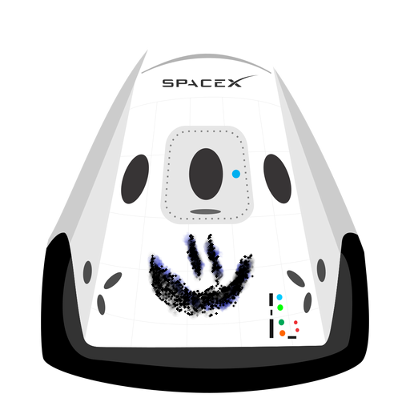

Cabezera
Tu blog de confianza
Este es el título atractivo e interesante del post

Y este es el parrafo de inicio donde vamos a explicar las cosas increíbles que se pueden hacer con ramas.
Los blogs son la mejor forma de compartir información y tus ideas. Mucho más que ir a conferencias o salir en Youtube. Excepto si eres un Rockstar. Pero estadísticamente no lo eres... por ahora.
Suscríbete y dale like